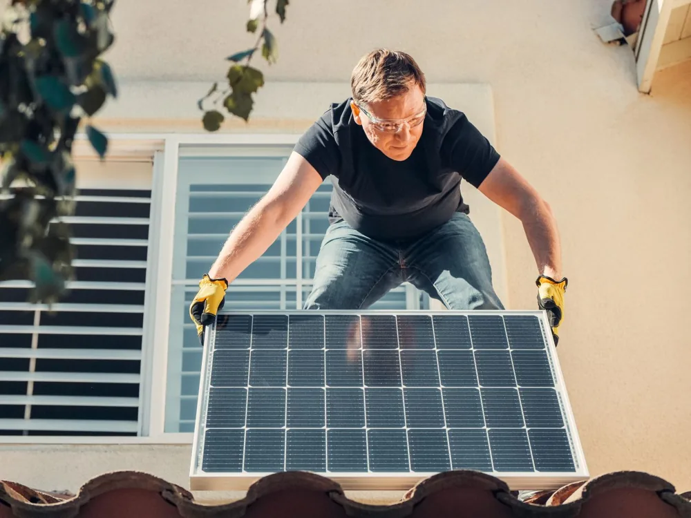
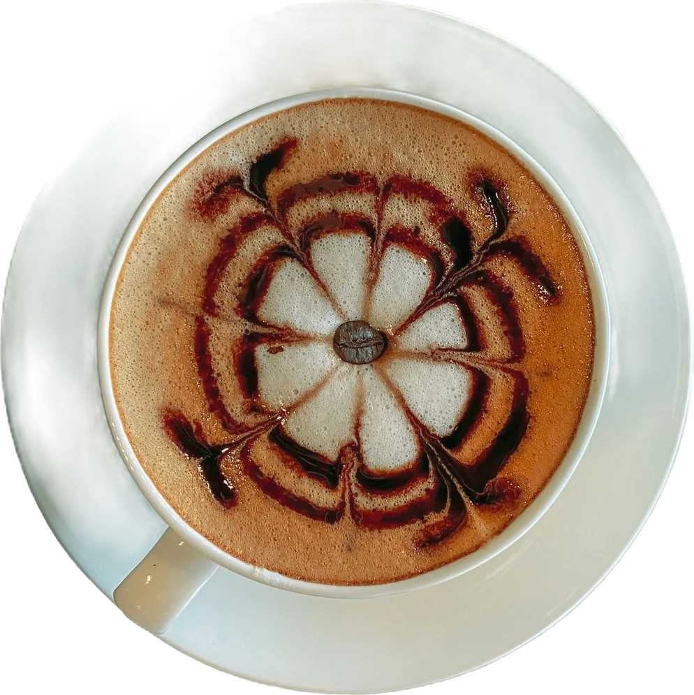
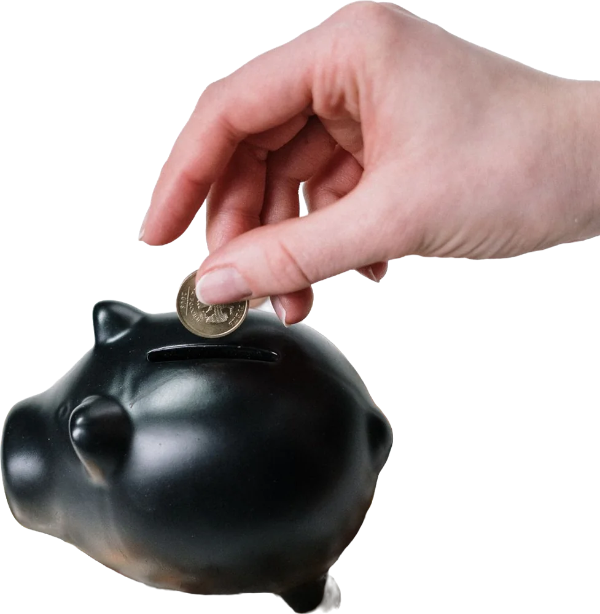
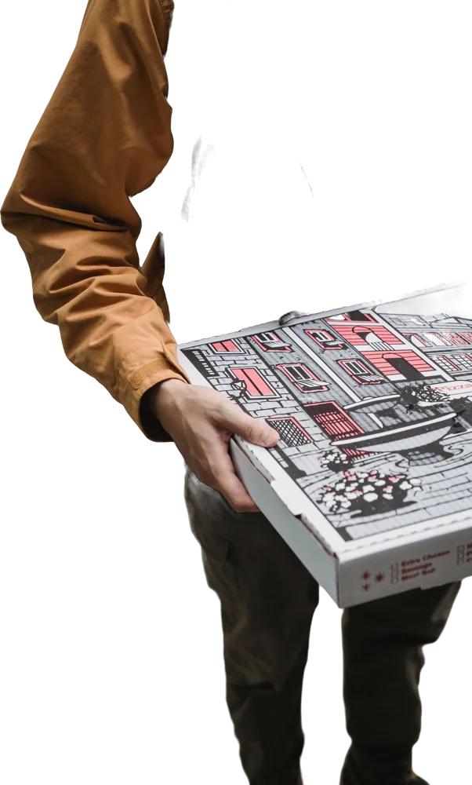
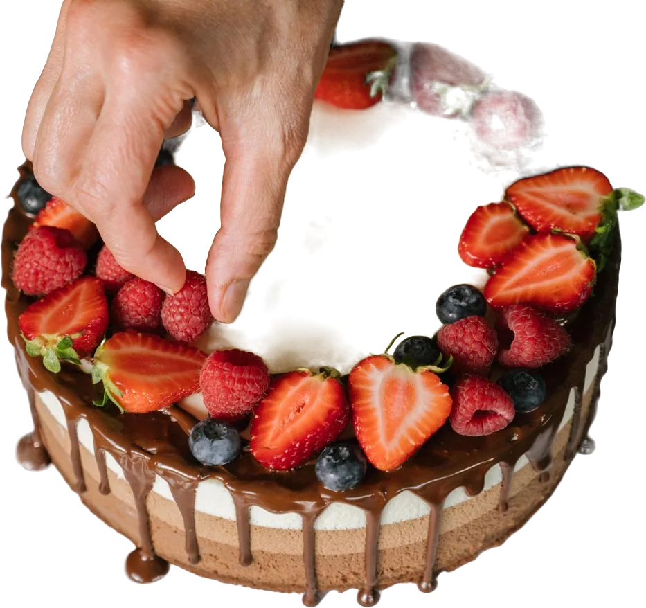
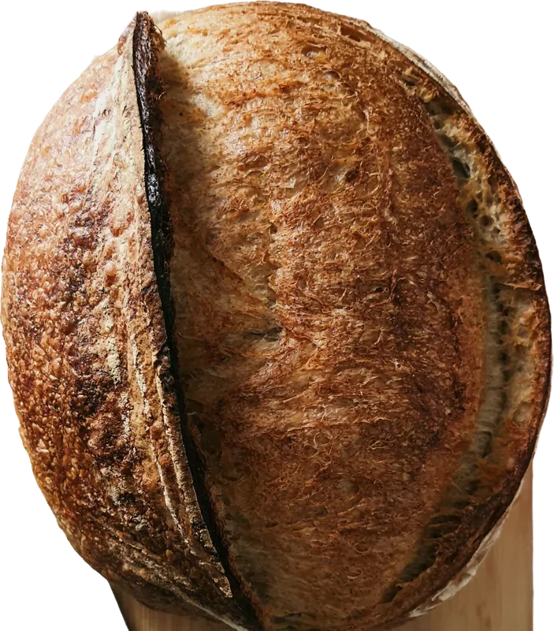
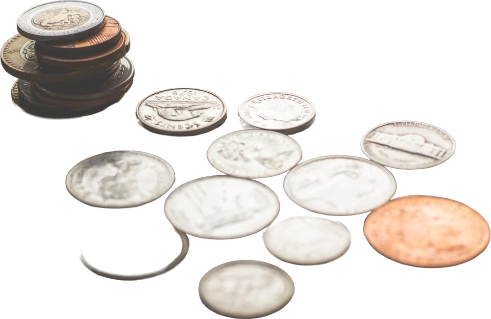
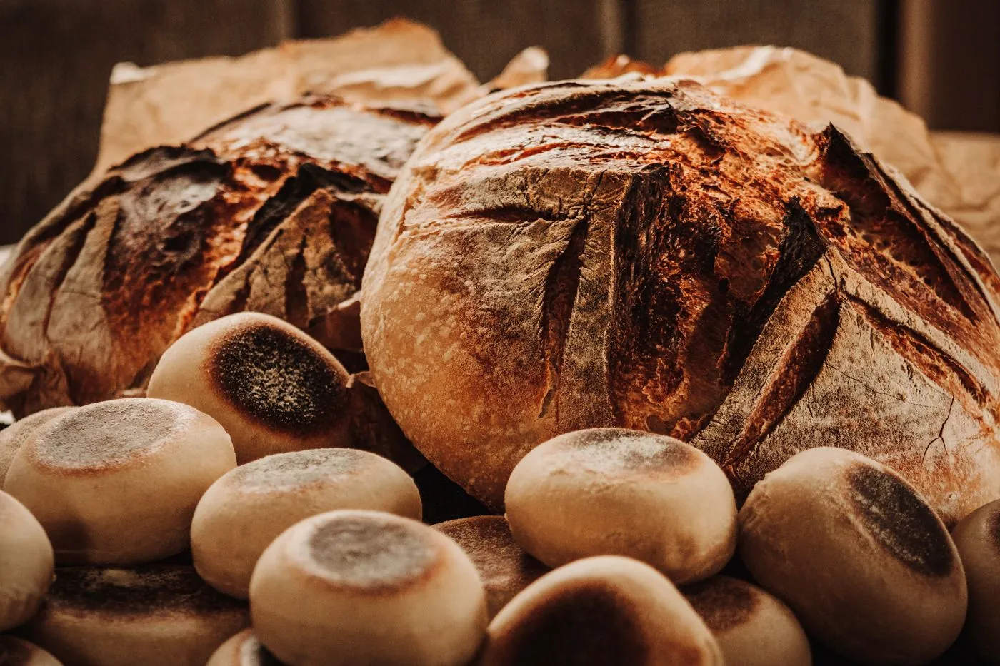
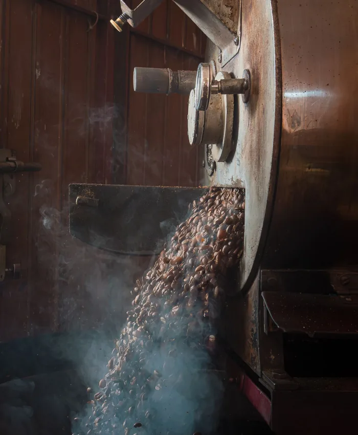
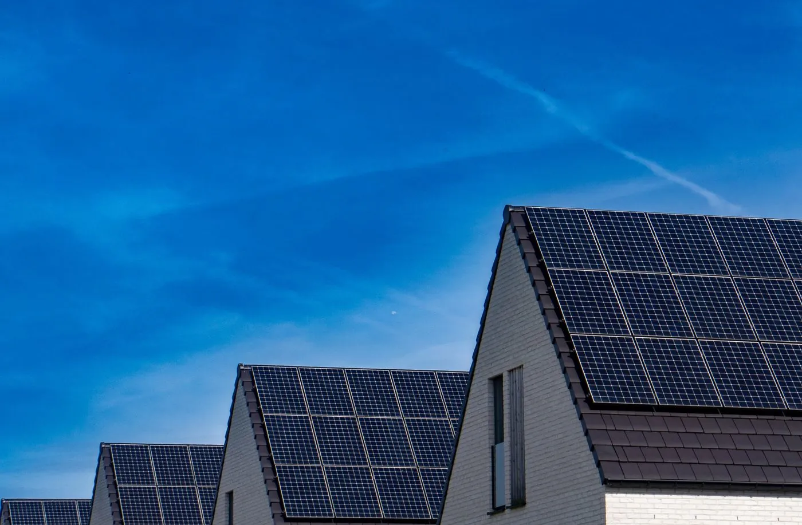

El viernes calculamos cuánto puede pagar Lucía por un cliente. Hoy buscamos cómo conseguir más sin pagar más por cada uno.
Lucía y Migas, segunda parte›››
Creado por FC Studio - Isidro Fernández C.
Portada. Dé la bienvenida y recuerde que seguimos con Lucía y su panadería, Migas. Diga que hoy también van a votar en el chat de Teams con A, B o C, y que antes de empezar un equipo va a contar cómo resolvió su caso de la Sesión 1. Pase enseguida a la siguiente lámina.
Un equipo nos cuenta su caso
Cinco minutos para contarnos cómo resolvieron su caso
1¿Qué le recomendaron al dueño?
2¿Cuál era la trampa?
3¿En qué se equivocó la IA?
¿Cuál caso eligieron?
A · Tueste
B · Agendo

C · Sol de Casa
5:00
minutos para el equipo
Un equipo presenta, 5 minutos. Invite al equipo que se ofreció (o elija uno) a compartir pantalla. Con el primer clic aparecen las tres preguntas que tienen que contestar, y conviene leerlas en voz alta. Pida que digan antes cuál de los tres dueños eligieron: Diego (Tueste), Valeria (Agendo) o Andrés (Sol de Casa). El segundo clic arranca el temporizador de 5 minutos. Si se pasan, corte con amabilidad. Al terminar, pregunte al resto si alguien encontró otra trampa en el mismo caso.
Dónde quedamos el viernes
La pregunta de la Sesión 1
¿Cuánto puede pagar Lucía por conseguir un cliente?
LTV es lo que deja un cliente mientras sigue comprando. CAC es lo que cuesta conseguirlo.
Un cliente de pedidos online
$41LTV en un añocontra$25CAC real
$41 son 4 pedidos al año de $10,25 de contribución cada uno. Los $25 son $20 de anuncios más lo que cobra la agencia.
LTV:CAC de 1,6
Un socio del Club del Pan
$184LTV en 12 mesescontra$60CAC
Los $60 salen de $1.200 en anuncios ÷ 20 socios. Lucía los recupera en el mes 3.
LTV:CAC de unos 3
Nos quedó pendiente qué pasa cuando Lucía quiere más clientes
Dónde quedamos. Recuerde la pregunta de la Sesión 1 tal como está en el recuadro negro. Al primer clic, el cliente de pedidos: deja $41 en un año (4 pedidos × $10,25) y cuesta $25. Al segundo, el socio del Club: deja $184 en 12 meses y cuesta $60, que salen de $1.200 en anuncios ÷ 20 socios, y esa plata vuelve en el mes 3. El último clic dice lo que el viernes no alcanzamos a ver, qué pasa si Lucía mete más plata en anuncios. Pregunte si alguien se acuerda de qué le proponía la agencia.
$2.000 → 100 clientes
$4.000 → ¿cuántos?
A B C
Encuesta
Lucía mete $4.000 en anuncios de pedidos en vez de $2.000. Con $2.000 llegaban 100 clientes nuevos. ¿Cuántos llegan ahora?
A
200 clientes nuevos
0%
B
150 clientes nuevos
0%
C
100 clientes nuevos
0%
Escriban A, B o C en el chat
Encuesta. Diga la pregunta en voz alta y dé 40 segundos. Cargue los votos con clic sobre cada barra (Shift + clic resta) o con las teclas 1, 2 y 3. No diga la respuesta todavía. Si alguien pregunta, aclare que los anuncios son los mismos, en Meta, y que solo cambia la plata.
La pregunta eraLucía mete $4.000 en anuncios de pedidos en vez de $2.000. Con $2.000 llegaban 100 clientes nuevos. ¿Cuántos llegan ahora?
Con más plata, cada cliente nuevo cuesta más
Nunca pensaron en masa madreel más caro
Les gusta el pan y no conocen Migascuesta más
Clientes fieles y vecinosbaratos
Los anuncios le llegan primero a quienes ya querían comprar. Salen baratos.
Con más plata, llegan a gente a la que le gusta el pan pero no conoce Migas. Hay que mostrarles más anuncios.
Al final, gente a la que hay que convencer desde cero: el círculo más grande y el más caro.
El doble de plata trae menos del doble de clientesRespuesta B: llegan 150 clientes nuevos
Rendimientos decrecientes. Meta muestra los anuncios primero a quienes tienen más probabilidad de comprar. Cuando se sube la inversión, llega a gente cada vez menos interesada, y cada cliente cuesta más. Los tres primeros clics abren los círculos, del más barato al más caro, y el cuarto deja la idea en la píldora amarilla. Con el quinto sale la respuesta: B, 150 clientes. Felicite a quienes votaron B y pregunte a quienes votaron A por qué pensaron que el doble de plata daba el doble de clientes.
La cuenta de duplicar
Con $4.000 en anuncios llegaron 150 clientes
Costo promedio de cada cliente
$4.000de anuncios÷150clientes nuevos=$26,67CAC promedio de anuncios
Con $2.000 eran $20 por cliente ($2.000 ÷ 100). El promedio subió poco.
Los $2.000 nuevos trajeron 50 clientes más (de 100 a 150). Cada uno de esos costó $40.
Cada cliente extra cuesta $40 y deja $41 en un año (4 pedidos × $10,25). Tarda un año entero en devolver lo que costó.
En su trabajo:antes de subir el presupuesto, calculen cuánto cuestan los clientes que se suman.
CAC marginal. La línea punteada es lo que pasaría si cada dólar rindiera igual: con el doble de plata, el doble de clientes (200). La línea rosada es lo que pasó, 150. En el segundo clic aparece el promedio ($26,67), que parece bien porque mezcla los primeros 100 clientes, que salieron a $20, con los 50 nuevos. El tercero muestra que esos 50 nuevos salieron a $40 cada uno, y al costo de los clientes que se suman le dicen CAC marginal. Después compare $40 con los $41 que deja un cliente en un año y pregunte si conviene pagar $40 para ganar $1 en un año.

Lo que puede mover Lucía · 1 de 3
Que cada cliente deje más
Lucía arma el combo «Desayuno completo»: pan, croissants y café por $35 en lugar del pedido de $25.
Pedido de hoy
Precio$25
Harina, mantequilla y bolsa− $8,75
Moto− $5
Banco (4 %)− $1
Contribución$10,25
Combo de $35
Precio$35
Ingredientes (35 %)− $12,25
Moto (el mismo viaje)− $5
Banco (4 %)− $1,40
Contribución$16,35
4pedidos al año×$16,35de contribución=$65,40de LTV÷$25de CAC=2,6veces (antes 1,6)
En su trabajo:un pedido más grande sube el CAC que pueden pagar sin tocar la campaña.
Que cada cliente deje más. La moto cuesta lo mismo con un pedido de $25 o de $35, porque es el mismo viaje. Por eso casi todo lo que se suma al pedido queda como contribución: pasa de $10,25 a $16,35. En la cuenta de abajo, con el mismo CAC de $25, cada dólar que Lucía paga por un cliente le vuelve 2,6 veces en lugar de 1,6. Pida ideas de combos para Migas.

Lo que puede mover Lucía · 2 de 3
Cobrar antes
El viernes lo vimos con el paquete de $130. El mismo socio del Club, que costó $60, cobrado de dos formas. La etiqueta verde marca cuándo ya devolvió esos $60.
Mes a mes $48
mes 1mes 2
$25,68
$23,11
$20,80
mes 3: recuperó los $60
Paquete 3 meses · $130
mes 2mes 3
$63,60
día 1: recuperó los $60
Payback (lo que tarda en volver lo que costó el cliente): de 3 meses a un día
En su trabajo:con un payback corto, la misma plata se invierte más veces en el año.
Cobrar antes. Esto ya lo vimos el viernes con el paquete de $130, así que pase rápido. Arriba, el socio mes a mes devuelve los $60 en tres pagos que bajan un poco cada mes porque algunos cancelan: $25,68 + $23,11 + $20,80 = $69,59 en el mes 3. Abajo, el paquete de $130 deja $63,60 el primer día. Payback es el tiempo que tarda en volver lo que costó el cliente. Hoy volvemos a este número cuando hablemos del ciclo pagado.
Lo que puede mover Lucía · 3 de 3
Gastar menos por cliente
Desayunos para oficinas: cada oficina deja $200 de contribución por evento y hace 3 eventos al año, $600 de LTV. Lucía da 20 degustaciones de $25 cada una.
20 oficinas con degustación
Si Lucía contesta la cotización el mismo día de la degustación, contratan 9 oficinas de cada 20 en lugar de 6.
$2.000la misma inversión÷9oficinas contratan=$222de CAC
2,7LTV:CAC ($600 ÷ $222)
En su trabajo:en negocios que consiguen clientes con un formulario (lead gen), el CAC también depende de lo que pasa después de que alguien lo llena. Pregunten en cuánto tiempo se responde.
Gastar menos por cliente. Si Lucía responde la cotización el mismo día, cierran 9 de cada 20 degustaciones en lugar de 6. Gasta lo mismo ($1.500 de anuncios + 20 degustaciones × $25 = $2.000) y consigue 3 oficinas más. El CAC baja de $333 a $222 sin tocar los anuncios. Pregunte: ¿quién en su empresa responde las cotizaciones, y en cuánto tiempo?
La respuesta a la pregunta de la Sesión 1
¿Cuánto puede pagar Lucía por conseguir un cliente?
le vuelve 3 veces o másrecupera, pero gana pocopierde plata
Un cliente de pedidos online
unos $14 · vuelve 3 veces$41 · el límite$25 · lo que paga hoy
Hasta $41 sin perder en un año, lo que deja Ana. Unos $14 ($41 ÷ 3) para que le vuelva tres veces. Hoy paga $25.
Un socio del Club del Pan
unos $61 · vuelve 3 veces$184 · el límite$60 · lo que paga hoy
Hasta $184, lo que deja un socio en 12 meses. Unos $61 ($184 ÷ 3) para el tres a uno, y hoy paga $60.
Lucía a la agenciaPausamos las tortas, escalamos el Club con el paquete de 3 meses y arreglamos los pedidos antes de subir la inversión.
La respuesta a la pregunta de la Sesión 1. Repita la pregunta. Cada barra va de $0 a lo que Lucía podría pagar: en verde le vuelve tres veces o más, en amarillo recupera pero gana poco, en rojo pierde. Por un cliente de pedidos puede pagar hasta $41 sin perder en un año, y unos $14 si quiere que le vuelva tres veces. Hoy paga $25. Por un socio del Club puede pagar hasta $184, y unos $61 ($184 ÷ 3) para el tres a uno, y hoy paga $60. El mensaje de la derecha es la decisión de Lucía, y con eso se cerraba la Sesión 1.
La pregunta de hoy
$40cuesta cada cliente extracontra$41deja ese cliente en un añoComprar más clientes tiene techo
Hoy respondemos
¿Cómo crece Lucía sin pagar más por cada cliente?
Que cada cliente traiga al siguiente
Que los clientes se queden
Elegir dónde crecer
Medir y probar
2El reto 2, con el mismo caso
Cómo vamos a trabajarEncuestas con A, B o C en el chatAl final, el reto 2 con su caso de la Sesión 1
Roberto lo dijo el viernes: ustedes hacen la tecnología que acompaña a los anuncios: la página y la experiencia del cliente. Cuando esa tecnología hace crecer al negocio sin gastar más en publicidad, eso es growth.
Para construir con IA:cada tema de hoy termina con algo que podrían construir con Claude para cambiar el número de ese tema.
La pregunta de hoy. Arranque con el número que acaban de ver: cada cliente extra le cuesta a Lucía $40 y le deja $41 en un año, así que meter más plata en anuncios tiene un techo. Después aparece la pregunta de hoy y el recorrido en cuatro paradas, con el reto al final. Cuando salga la dinámica, recuerde lo que dijo Roberto Solano al cerrar la Sesión 1: muchos de ustedes no manejan la campaña, pero sí la página, la experiencia del cliente y lo que baja el costo de conseguirlo. El último clic presenta la franja blanca, que va a aparecer en cada tema. Pregunte qué construyeron ellos que haya hecho llegar más clientes.
Del embudo al ciclo
Hoy Lucía consigue clientes con un embudo
$2.000$0en anuncios al mes
Lucía paga anuncios de pedidos para que la gente llegue a su tienda en línea.Lucía apaga los anuncios.
4.0000visitas
$2.000 ÷ $0,50 por clic = 4.000 personas entran a la tienda.Sin anuncios, nadie llega a la tienda.
4000carritos
10 % de las visitas: 400 de 4.000 agregan algo al carrito.Nadie llena un carrito.
1000clientes nuevos
25 % de los carritos: 100 de 400 pagan. Cada uno costó $20 de anuncios ($2.000 ÷ 100).El mes siguiente llegan 0 clientes nuevos.
El embudo es una línea
Para sacar más clientes abajo, hay que meter más plata arriba. Si Lucía deja de pagar, se acaba.
Fuente: Reforge
El embudo (en inglés, funnel). Son los números del viernes, ahora dibujados. Con el primer clic caen los $2.000 de anuncios del mes. El clic a $0,50 trae 4.000 visitas, y de esas, 400 agregan algo al carrito: 10 de cada 100. Al cuarto clic salen los 100 que pagan, 1 de cada 4 carritos, y cada uno costó $20 de anuncios. Antes del quinto clic pregunte qué pasa el mes siguiente si Lucía apaga los anuncios. Deje que respondan en el chat y muestre cómo el embudo se vacía: 0 visitas, 0 carritos, 0 clientes nuevos. Al final diga la idea de Reforge con sus palabras: el embudo es una línea, lo que sale abajo depende de lo que se mete arriba, y por eso el viernes vimos que comprar más clientes tiene techo.
Del embudo al ciclo
¿Y si cada clienta trajera a la siguiente?
1
Entra una clienta
Ana pide su pan en la tienda en línea de Migas.
2
Hace algo
Le toma una foto al pan y la sube a Instagram.
3
Eso trae a la siguiente
Su amiga Sofía ve la foto y pide.
La flecha vuelve al inicio: ahora Sofía ocupa el lugar de Ana, y su foto puede traer a otra amiga.
Un ciclo (en inglés, loop) es un recorrido en el que lo que deja un cliente (una foto, una invitación o la plata que paga) trae al siguiente.
Fuente: Reforge
El ciclo. Recuerde que en el embudo cada cliente nuevo cuesta plata de anuncios y, si Lucía deja de pagar, no entra nadie. Ahora cuente la historia con un clic por paso: Ana, la clienta del viernes, pide su pan, le toma una foto, la sube a Instagram, y su amiga Sofía la ve y pide. En el cuarto clic la flecha vuelve al inicio y Sofía ocupa el lugar de Ana. Después pregunte al grupo qué tendría que pasar para que Sofía también suba una foto, y recién ahí lea la definición. Reforge describe cada ciclo con esos tres pasos: entra alguien, hace algo, y eso trae al siguiente. Desde aquí diga siempre «ciclo».
Del embudo al ciclo · Tipos
Cuatro formas en que un cliente trae al siguiente
invita → se registra → invita
InvitacionesEn la fuente
Dropbox: alguien comparte una carpeta y el otro se registra para abrirla.
En Migas
Un socio del Club invita a una amiga y ella se hace socia.
publica → lo ven → publica
ContenidoEn la fuente
Yelp: una reseña aparece en Google y de ahí llega otro usuario.
En Migas
La foto de Ana en Instagram trae a Sofía.
anuncio → paga → más anuncios
PagadoEn la fuente
Headspace: un anuncio, una prueba, un pago, y ese pago compra más anuncios.
En Migas
Lo que deja el Club vuelve a anuncios del Club.
vende → cobra → contrata
VentasEn la fuente
Lo que dejan los clientes paga más vendedores, que traen más clientes.
En Migas
Los desayunos pagan a alguien que llama a más oficinas.
En el chat: ¿cuál de los cuatro han visto en una app que usan?
Fuente: Reforge
Cuatro tipos de ciclo. Cada tarjeta trae el ejemplo de Reforge y el de Migas. En Dropbox alguien comparte una carpeta y, para abrirla, el otro se registra, y después comparte sus propias carpetas. En Yelp una persona escribe una reseña, la reseña sale en Google y de ahí llega otro usuario. En Migas pasa lo mismo con la foto de Ana. Headspace pone un anuncio, alguien prueba la app y paga, y con esa plata compra más anuncios. Así funcionaría el Club si lo que deja vuelve a anuncios. En el de ventas, lo que pagan los clientes alcanza para contratar otro vendedor, que trae más clientes: en Migas serían los desayunos de oficina pagando a alguien que llama a más oficinas. Al final lea la pregunta del chat y comente dos o tres respuestas.
Del embudo al ciclo · Pagado
El ciclo pagado gira tan rápido como vuelve la plata
Club con pago mensual
Cada socio costó $60 ($1.200 ÷ 20 socios) y deja $25,68 al mes. Con los que cancelan, junta los $60 en el mes 3.
20socios en el año
Club con prepago
El paquete de 3 meses a $130 deja $63,60 el primer día, más que los $60 que costó el socio. La plata vuelve el día 1.
20socios en el año
Un año de Lucía, mes a mesmes 0
mes 0mes 6mes 12
Cada vuelta mete otra vez $1.200 y trae 20 socios. La cuenta es simplificada: no descuenta los socios que se van ni que el CAC sube cuando Lucía invierte más.
Wish: misma conversión, la plata vuelve en
10 días
3005 días
600
En un mes: 3 vueltas y 300 usuarios, o 6 vueltas y 600.
En su trabajo:si les piden crecer más rápido con anuncios, busquen primero cómo hacer que la plata vuelva antes.
Fuente: Reforge
El ciclo pagado. Aquí la plata que dejan los clientes vuelve a anuncios. Cada rueda es una vuelta de esa plata y la barra de la derecha corre un año en unos segundos. Antes de que gire la primera, recuerde el payback del viernes: cada socio costó $60, porque fueron $1.200 en anuncios para 20 socios, y deja $25,68 al mes. Contando a los que cancelan, junta los $60 en el mes 3, y recién ahí Lucía puede volver a meter los $1.200. Por eso da 4 vueltas al año y trae 80 socios. Con el prepago de $130 la plata vuelve el día 1, se reinvierte cada mes y da 12 vueltas, 240 socios. Diga en voz alta que es una simplificación. Wish, la tienda en línea, tenía la misma conversión en los dos casos y lo único que cambiaba era cuánto tardaba en volver la plata. Cierre con una consulta al chat: ¿qué otra oferta conocen que cobre antes?
A B C
Encuesta
Lucía tiene 100 socios en el Club. Si el 20 % invita a alguien, cada uno manda 2 invitaciones y 1 de cada 4 invitados se hace socio, ¿cuántos socios nuevos llegan?
A
40 socios nuevos
0%
B
10 socios nuevos
0%
C
25 socios nuevos
0%
Escriban A, B o C en el chat
Los 100 socios del Club
100socios20 %invita a alguien2invitaciones cada uno1 de cada 4invitados se hace socio
Encuesta de referidos. Lea la pregunta despacio y señale los cuatro datos de abajo. Un referido es un cliente que llega porque otro cliente lo invitó. Muchos van a multiplicar solo una parte: 20 por 2 da 40, o 100 por 25 % da 25. Cargue los votos con clic o con las teclas 1, 2 y 3 y pase a la respuesta sin decir cuál es.
La pregunta era · EncuestaLucía tiene 100 socios en el Club. Si el 20 % invita a alguien, cada uno manda 2 invitaciones y 1 de cada 4 invitados se hace socio, ¿cuántos socios nuevos llegan?
100socios del Club
20 %40 %invita a alguien→
2040socios invitan
× 2invitaciones cada uno→
4080invitaciones
1 de 4se hace socio→
1020socios nuevos
Respuesta B: 10
20 %40 %invita×2invitaciones×25 %se hace socio=0,10,2coeficiente viral
Cada socio trae en promedio 0,10,2 socios nuevos. Ese número se llama coeficiente viral.
En Slack, cuando subió de 12 % a 15 % la parte de usuarios que crea un equipo, cada usuario pasó a traer 3,1 en vez de 2,2.
Los 10 nuevos también invitan
100+10+1+0,1≈111
Los 100 terminan siendo unos 111.
Si invita el 40 %, llegan 20
Cuánto cuesta un socio referido
$8
por socio referido ($4 + $4 en croissants)
$60
por socio con anuncios ($1.200 ÷ 20)
Para construir con IA:la página de invitación con un link personal, el mensaje listo para mandar por WhatsApp y un contador de cuántos llegaron por cada socio.
Fuentes: Reforge y Hormozi
Respuesta de la encuesta. Lea otra vez la pregunta de arriba y haga la cuenta de izquierda a derecha, un clic por operación. Primero aparecen los 100 socios. El 20 % invita, o sea 20 socios, que se pintan de verde dentro de los 100. Cada uno manda 2 invitaciones y salen 40. Uno de cada 4 invitados se hace socio: 10, la B. Dividido entre los 100 socios, cada uno trajo 0,1 (10 nuevos ÷ 100 socios), y ese número es el coeficiente viral. Los 10 nuevos también invitan y traen 1 más (10 × 0,1), y ese 1 trae 0,1, así que los 100 terminan en unos 111. Reforge le dice multiplicador a ese 111 ÷ 100 = 1,11, o sea cuántos socios hay al final por cada uno que había al principio. En el séptimo clic la cascada cambia a 40 %: 40 socios mandan 80 invitaciones, 1 de cada 4 se hace socio y llegan 20, así que el coeficiente viral sube de 0,1 a 0,2. Diga que eso es lo que más mueve el resultado: cuántos socios invitan. El clic siguiente la devuelve a 20 %. Después viene el costo: una bolsa de croissants para el socio y otra para la amiga, de $4 en ingredientes cada una, $4 + $4 = $8 por socio contra $60 por anuncios. Hormozi propone justo eso, premiar a los dos lados con algo que el cliente quiere. Cuando aparezca el ejemplo de Slack, haga notar que bastaron 3 puntos más en un solo paso del ciclo. Después pida ideas en el chat para la página de invitación: ¿qué le pondrían para que más socios inviten?
Del embudo al ciclo · En una app
Así se ve en una app: los referidos del Club
En la fuente, Dropbox le daba espacio extra a quien invitaba y al invitado: más del mismo producto para los dos lados.
7:05
7:05
Sábado
MMigasahora
¿Llegó calientito?
Regálele croissants a una amiga.
MMigas7:00
Su caja del Club ya está en la puerta.
1El momento
Se pide justo después de que Ana probó el pan: el aha, cuando siente lo que compró.
7:06
Migas
Regálele croissants a una amiga
Te regalo una bolsa de croissants de Migas. Probá el Club con este link migas.cr/ana
Mandar por WhatsApp
2Invitar en un toque
El mensaje y el link personal ya vienen listos: nada de códigos que copiar.
9:12
migas.cr/ana
Migas
Regalo de Ana
Ana le regaló una bolsa de croissants. Únase al Club y llega con su primera caja este sábado.
Únase al Club
3Lo que ve la amiga
Sofía ve quién le manda el regalo, que ya está aplicado.
6:20
Migas
Sofía se hizo socia: ganaron croissants las dos
2 de 3 amigas
Con la tercera, su próxima caja es gratis.
Invitar a otra amiga
4El avance de Ana
Quien invita ve qué pasó con su invitación y cuánto le falta.
Para construir con IA:la notificación del sábado, el link personal, la página de la amiga y la barra de avance; cada pantalla con su contador.
Fuente: Reforge
Así se ve en una app. Es la página de invitación de la lámina anterior, dibujada en cuatro pantallas de celular que entran una por clic. La primera es la pantalla bloqueada de Ana: es sábado, son las 7:05 y le acaba de llegar la caja del Club, así que Migas le manda «¿Llegó calientito? Regálele croissants a una amiga». Explique la palabra aha: es el momento en que el cliente siente lo que compró, y la van a ver con más calma en el bloque siguiente. Migas pide la invitación justo ahí porque Ana acaba de probar el pan. Si se la pidiera el día que se registró, todavía no tendría nada que recomendar. Al tocar la notificación se abre la pantalla de invitar con el mensaje escrito y el link personal de Ana. Pregunte en el chat cuántos han dejado de usar un código de descuento porque había que copiarlo y pegarlo. Después Sofía abre el link y ve que el regalo viene de Ana y que ya está aplicado, sin escribir ningún código. En la cuarta pantalla Ana se entera de que Sofía se hizo socia y ve cuánto le falta para la caja gratis. Quien no sabe qué pasó con su invitación deja de invitar. Al quinto clic cuente lo de Dropbox: regalaba espacio extra a los dos, o sea más del mismo producto, como Migas con los croissants. En el último, lea la franja y subraye el contador de cada pantalla, porque así Lucía sabe en cuál se pierde la gente.
Del embudo al ciclo · Juego
Un juego para invitar
Los niveles de «Embajadora de Migas» y lo que le cuesta a Lucía cada premio.
7:30
Migas
Embajadora de MigasNivel 1
2 de 3 amigas
A las 3, caja gratis.
Meta de noviembre
Este mes, 2 amigas y gana una bolsa extra
1 de 2
Insignia de nivelBarra de avanceMeta del mes
Cuando…PremioLe cuesta a Lucía
Cada amiga que se hace sociaUna bolsa de croissants para cada una$4amiga+$4Ana=$8por amiga
Al llegar a 3 amigas sociasUna caja del Club gratis para AnaEl Club de $48 al mes trae 4 cajas.$3,60ingredientes $14,40 ÷ 4+$1,50reparto $6 ÷ 4=$5,10una caja
Lo que hay que vigilar (contramétricas: números que no pueden empeorar mientras crece otro)
Socias que se unen por el regalo y cancelan en el primer mes.
Cuentas repetidas para cobrar el premio dos veces.
En su trabajo:antes de prometer un premio, calculen cuánto cuesta cada cliente que trae y compárenlo con el CAC de anuncios.
Fuentes: Reforge y Hormozi
Un juego para invitar. Muestre la pantalla de Ana, que ya es Embajadora de Migas, y en el primer clic señale las tres piezas de juego: la insignia de nivel, la barra de avance hacia la caja gratis y la meta del mes. Después haga la cuenta de lo que cuesta, un clic por operación. Cada amiga que se hace socia recibe una bolsa de croissants y Ana recibe otra, así que a Lucía le cuesta $4 + $4 = $8 en ingredientes. Al llegar a 3 amigas socias, Ana recibe una caja del Club gratis. Recuerde de dónde sale lo que cuesta una caja: el Club de $48 al mes trae 4 cajas, con $14,40 de ingredientes y $6 de reparto al mes. Dividido entre 4, cada caja cuesta $3,60 + $1,50 = $5,10. Tres socias nuevas cuestan 3 × $8 + $5,10 = $29,10 en premios, o sea $9,70 por socia, contra los $60 que cuesta una socia con anuncios ($1.200 ÷ 20 socios). Si usan la meta del mes, la bolsa extra también entra en la cuenta. Hormozi recomienda premiar con algo del mismo negocio que el cliente quiere, y por eso a Lucía el premio le sale a precio de ingredientes. Después lea lo que hay que vigilar. A los números que no pueden empeorar mientras se mejora otro se les dice contramétricas, y van a volver en el bloque de medir y probar. Pregunte en el chat cómo evitarían las cuentas repetidas, por ejemplo con un solo premio por número de teléfono y por dirección de entrega.
Del embudo al ciclo · Contacto casual
El producto también trae clientes
Reforge lo llama contacto casual: la gente ve el producto mientras otro lo usa, y de ahí salen clientes nuevos.
Lyft: un bigote rosado en el frente de cada carro, que veía todo el que pasaba por la calle.
SurveyMonkey: cada encuesta termina con «Hecho con SurveyMonkey», y lo lee cada persona que la contesta.
Drift: su chat aparece en las páginas de sus clientes, frente a cada persona que las visita.
En Migas: una etiqueta con QR en cada caja

+1 pedido
+1 pedido
+1 pedido
La ve todo el que está en la casa cuando llega el pan, y quien escanea el QR llega a la tienda.
Para construir con IA:el QR con un link que cuenta cuántos pedidos llegan desde las cajas.
Fuente: Reforge
El producto también trae clientes. Reforge llama contacto casual a lo que pasa cuando alguien ve el producto mientras otra persona lo usa. Lyft ponía un bigote rosado en el frente de los carros y todo el que pasaba por la calle veía la marca. SurveyMonkey pone «Hecho con SurveyMonkey» al final de cada encuesta, así que cada persona que contesta una ve el nombre. El chat de Drift aparece en las páginas de sus clientes, frente a cada visitante. En Migas, cada caja del Club lleva una etiqueta con un QR que dice «¿Le gustó? Pida el suyo». La caja llega a una casa donde viven varias personas y cualquiera puede escanear el código. Para la última franja, consulte al grupo cómo sabría Lucía si la etiqueta funciona. La respuesta es un link con su propio contador.
Clientes que se quedan
El Club de Lucía es un balde con un agujero
Arriba entran socios
Los traen los anuncios. Cada uno le costó $60: $1.200 en anuncios ÷ 20 socios.
Abajo se van
Cada mes cancela 1 de cada 10 socios del Club.
Si el agujero es grande, cada dólar en anuncios rellena lo que se sale.
Antes de pagar más anuncios, se mira cuántos se van
Entran$60 cada socioSe van1 de cada 10 al mes
Fuentes: Reforge y Hormozi
El balde con agujeros. Con el primer clic entran socios por los anuncios, y conviene recordar de dónde sale el costo: Lucía puso $1.200 en anuncios y llegaron 20 socios, así que cada uno costó $60. En el segundo se abre el agujero de abajo, que es la cancelación, porque cada mes se va 1 de cada 10 socios. En el tercero el agujero se agranda y el nivel del balde baja aunque sigan entrando socios por arriba. Pregunte qué harían primero: meter más plata en anuncios o arreglar el agujero. Hormozi le dice leaky bucket (balde con agujeros) y Reforge explica lo mismo en la lección 3.
A B C
Encuesta
A consigue 100 socios nuevos por mes y cada mes se le va el 10 %. B consigue 200 por mes y se le va el 30 %. ¿Quién tiene más socios dentro de un año?
A
El A
0%
B
El B
0%
C
Quedan iguales
0%
Escriban A, B o C en el chat
A+100 al messocios nuevosse va el 10 %cada mes
B+200 al messocios nuevosse va el 30 %cada mes
Encuesta. Lea las dos situaciones despacio y señale los baldes de la derecha: B echa el doble de socios arriba, pero su agujero es más grande. Muchos van a votar B porque 200 es el doble de 100, y está bien que pase, porque la respuesta sorprende más. Cargue los votos con las teclas 1, 2 y 3 y avance sin dar pistas.
Respuesta de la encuesta
La pregunta A consigue 100 socios nuevos por mes y cada mes se le va el 10 %. B consigue 200 por mes y se le va el 30 %. ¿Quién tiene más socios dentro de un año?
Respuesta: A
Cada mes: socios del mes anterior que se quedan + socios nuevos. A en el mes 2: 100 × 0,9 + 100 = 190.
B va adelante hasta el mes 9. En el mes 10, A lo pasa. Al año: 718 contra 657. A los dos años: 920 contra 667.
Techo = socios nuevos por mes ÷ cancelación. A: 100 ÷ 10 % = 1.000. B: 200 ÷ 30 % ≈ 667. Ahí se van tantos como entran: el 30 % de 667 son 200.
Con un CAC de $60, B paga 200 × $60 = $12.000 al mes en anuncios. A paga 100 × $60 = $6.000.
En la fuente, con millones de usuarios: B va adelante a los 6 meses y A gana a los 3 años.
Fuentes: Reforge y Hormozi
Respuesta. Lea la pregunta otra vez antes de avanzar. Al primer clic las dos líneas se dibujan hasta el mes 9 y aparece la cuenta de cada mes: A en el mes 2 tiene 100 × 0,9 + 100 = 190 socios, y B tiene 200 × 0,7 + 200 = 340. En el mes 6, B lleva 588 y A 469, así que B va ganando. Al segundo clic las líneas llegan al mes 12, y en el mes 10 A pasa a B (651 contra 648). Al año quedan 718 contra 657, y a los dos años 920 contra 667. Después viene el techo, que es lo más importante de la lámina: cada balde deja de crecer cuando los que se van son tantos como los que entran. B se queda en 667 porque el 30 % de 667 son 200, justo los que entran cada mes, mientras que A se acerca a 1.000 porque el 10 % de 1.000 son 100. Al final, recuerde que B paga el doble en anuncios para tener menos socios, y pregunte cuál de los dos negocios les gustaría manejar.
Curvas de retención
¿De cada 100 clientes, cuántos siguen comprando?
↑Eje vertical: de cada 100 clientes que empezaron, cuántos siguen→Eje horizontal: meses desde que empezaron
Cae a cero
La torta de cumpleaños. Se compra una vez. El mes siguiente casi nadie vuelve, porque el cumpleaños ya pasó.
Se aplana
El Club del Pan. Al principio cancelan varios, pero un grupo se queda y paga todos los meses.
Sonríe
Los desayunos. Algunas oficinas dejan de pedir unos meses y vuelven para el evento de fin de año, así que la curva sube.


En su trabajo:pidan la curva de retención por grupo de clientes según el mes en que llegaron. Si cae a cero, cada venta se vuelve a pagar con anuncios.
Formas de ejemplo, sin datos de Migas · Fuente: Reforge
Tres formas de curva. Explique primero los ejes con calma. Arriba a la izquierda están los 100 clientes que empezaron, y cada punto de la línea dice cuántos de esos 100 siguen comprando en ese mes. La torta cae a cero porque se compra una vez. El Club se aplana, porque después de los primeros meses queda un grupo que sigue pagando. La curva de los desayunos sonríe. Deténgase ahí, porque el eje cuenta cuántos de los 100 del principio siguen comprando, así que la línea solo puede subir si vuelven clientes que se habían ido. Algunas oficinas dejan de pedir unos meses y vuelven para el evento de fin de año. Reforge le dice reactivación a esa vuelta. Una oficina nueva del mismo edificio no sube esta curva, porque entra en el grupo de clientes de su propio mes. Aclare que son formas de ejemplo y no números de Lucía. Para cerrar, pregunte qué forma creen que tiene la curva del negocio donde trabajan y quién podría sacarla, separada por el mes en que llegó cada grupo de clientes.

Retener y el CAC
Si se van menos socios, Lucía puede pagar más por cada uno
El LTV del socio suma $25,68 de contribución por cada mes que sigue en el Club ($48 menos ingredientes, reparto y banco). Cada barra es un mes y se achica porque algunos cancelan.
Cancela 10 %1 de cada 10 al mes
$184de LTV en 12 meses
Cancela 7 %7 de cada 100 al mes
$213de LTV en 12 meses
Con la referencia de tres a uno (LTV:CAC de 3)
$184÷ 3=$61por socio
$213÷ 3=$71por socio
En la subasta de anuncios gana quien puede pagar más por cliente. Con $71, Lucía le gana a una panadería que retiene peor.
En la fuente: si el LTV sube de $100 a $120, el CAC que se puede pagar pasa de $25 a $30.
En su trabajo:antes de pedir más presupuesto, pregunten cuántos clientes se quedan al mes 3.
Fuente: Reforge
Retener sube lo que pueden pagar. Recuerde cómo se llega a los $25,68 de cada mes: $48 de mensualidad menos $14,40 de ingredientes, $6 de reparto y $1,92 de banco. El LTV suma esa contribución mes a mes, contando solo los socios que siguen, y por eso las barras bajan. Con 10 % de cancelación da $184 en 12 meses, mientras que con 7 % da $213, porque las barras bajan más despacio. Si Lucía quiere que cada dólar le vuelva tres veces, divide entre 3 y queda en unos $61 contra unos $71. La subasta funciona así: Meta le muestra el anuncio a quien puede pagar más por ese cliente, de modo que la panadería que retiene mejor ofrece más y aparece más.
Activación
Lucía diseña la llegada del socio desde el final
Activar es llevar al socio desde que paga hasta que ya no piensa en cancelar. Lucía empieza por el último escalón: qué hace un socio que se queda.
Lucía lo define así
El socio sube así
Se define 3.ºSetupDirección, día de entrega y pago.Lo mínimo que tiene que hacer el cliente.
Se define 2.ºAhaLa primera caja llega caliente el sábado a las 7 a. m.La primera vez que siente lo que compró.
Se define 1.ºHábitoRecibe 4 cajas seguidas sin pausar.Cuando ya lo hace sin pensarlo.
1234
Sábado · 7 a. m.
DirecciónDíaPago
En la fuente, Netflix: elegir 5 géneros, ver algo la primera semana y ver algo cada semana durante 4 semanas.
Fuente: Reforge
Activación de atrás para adelante. El primer escalón que aparece es el último que vive el socio, el hábito: recibe 4 cajas seguidas sin pausar. Después aparece el aha, la primera vez que siente lo que compró, que en Migas es la caja caliente del sábado a las 7 a. m. Lo último que Lucía define es el setup, lo mínimo que el socio tiene que hacer para llegar al aha: dirección, día de entrega y pago. Todo lo demás se puede preguntar cuando ya recibió la primera caja. Pregunte cuál es el aha de la app que más usan, y cierre con el ejemplo de Netflix de la fuente.
Las cuatro preguntas del cliente
Lo primero que ve el cliente después del anuncio tiene que cumplir lo que el anuncio prometió
MigasPatrocinado
Pan caliente en su puerta el sábado
Únase al Club
›››
Únase al Club
14 campos12 díashasta la primera caja
¿Es para mí?Le gusta el pan y vive donde Migas reparte.
?
¿Hace lo que quiero?Promete pan este sábado y llega en 12 días.
?
¿Me importa ahora?Lo ve cuando piensa en el desayuno del sábado.
?
¿Sé cómo lograrlo?Antes de ver el pan tiene que llenar 14 campos.
?
En la fuente, Credit Karma promete un puntaje de crédito gratis y lo primero que muestra después del registro es ese puntaje.
En su trabajo:lean el anuncio y hagan el registro como si fueran clientes. Si lo primero que ven no es lo que prometió el anuncio, ahí se pierde gente.
Fuente: Reforge
Las cuatro preguntas. Lea el anuncio en voz alta. Al tocar el botón aparece un formulario de 14 campos, y en el clic siguiente se ve que la primera caja llega 12 días después. Haga las cuatro preguntas como si fuera el cliente, una por clic. ¿Es para mí? Sí, porque le gusta el pan y vive donde Migas reparte. ¿Hace lo que quiero? No, porque el anuncio prometió pan este sábado y la primera caja llega en 12 días: lo primero que pasa después del anuncio no cumple la promesa. ¿Me importa ahora? Sí, porque el anuncio le llega cuando está pensando en el desayuno del fin de semana, así que las ganas están. ¿Sé cómo lograrlo? No, porque 14 campos asustan antes de ver el pan. Si alguien pregunta por qué la espera no va en «¿me importa ahora?», aclare que esa pregunta mide las ganas del cliente y que la espera es una promesa incumplida. Pida en el chat qué cambiarían primero, y después muestre que Credit Karma cumple en la primera pantalla lo que dijo el anuncio.
Así se ve en una app
El mismo registro, rediseñado
Hoy: 1 pantallaRediseño: 3 pantallas, con la barra «1 de 3»
8:15
Migas
Únase al Club
Enviar
14 campos
Pide todo y la caja llega en 12 días
8:15
Migas1 de 3
¿Dónde le dejamos el pan?
Frente al parqueSeguir
1Pide solo lo que hace falta para el aha
›››
8:16
Migas2 de 3
¿Qué sábado empieza?
Este sábado7 a. m.
Otro sábado7 a. m.
Seguir
2La barra muestra cuánto falta
›››
8:16
Migas3 de 3
Pagar
TarjetaSINPE Móvil
Su primera caja llega este sábado a las 7 a. m.
Pagar $48
3Cumple el anuncio: pan este sábado
Números de ejemplo
De 100 personas que tocan «Únase al Club», pagan:
22hoy60rediseño
22de 100 terminan
100llegan
80llegan
72llegan
60pagan
se van20se van8se van12
Cada pantalla se mide por separado.
Para construir con IA:el registro de 3 pantallas con un contador por pantalla, para saber dónde se va la gente.
Fuente: Reforge
El mismo registro, rediseñado. A la izquierda queda el formulario de la lámina anterior: 14 campos de una vez y la primera caja 12 días después. A la derecha está el mismo registro partido en tres pantallas, una por clic. La primera pide solo la dirección, porque sin dirección no llega el pan. Recuerde el setup de la lámina de activación: dirección, día de entrega y pago, y nada más antes del aha. Lo que sobra del formulario (cumpleaños, cómo conoció a Migas) se puede preguntar después de la primera caja. La barra «1 de 3» le dice al cliente cuánto le falta. La tercera pantalla cumple lo que prometió el anuncio, porque la caja llega este sábado a las 7 a. m. y no en 12 días. En el cuarto clic aparece el embudo por pantalla. Aclare que son números de ejemplo y no datos de Migas: de 100 personas que tocan «Únase al Club», con el formulario de hoy terminan 22, y con el rediseño 80 llegan a la segunda pantalla, 72 a la tercera y 60 pagan. En el quinto clic se ve cuántos se van en cada pantalla, algo que solo se sabe si cada pantalla tiene su propio contador. Diga que este es el modelo del proyecto de Agendo en el reto: rediseñar la puesta en marcha para que más barberías lleguen a su primera reserva, pantalla por pantalla y con un contador en cada una. Pregunte en cuál de las tres pantallas se va más gente y qué le cambiarían. La idea de pedir solo lo necesario para llegar al primer momento de valor es de Reforge (Growth Series, lección 9, y Retention & Engagement, lección 7).
Para construir con IA
Lo que pueden construir para que el socio se quede
Hormozi lo explica así: todo cliente que llega a cierto punto se queda más tiempo, y el trabajo es llevar a cada cliente a ese punto.
WhatsApp automático del viernes
MigasHola, su caja llega mañana sábado a las 7 a. m.
Sale solo cada viernes, con la hora de la caja de cada socio.
El número que mueveCancelación del mes
Pausar en vez de cancelar
Pausar una semanaCancelar
El socio que se va de viaje pausa una semana y vuelve, en lugar de irse del Club.
El número que mueveCancelación del mes
Registro de 3 campos
DirecciónDía de entregaPago
Con esos 3 campos, la primera caja llega ese mismo sábado.
El número que mueveSocios que llegan a la primera caja
Para construir con IA:el registro corto, el mensaje automático o el botón de pausa. Cada uno se mide con un número.
Fuente: Hormozi
Para construir. Cada tarjeta es algo que ustedes pueden hacer con Claude en una tarde, y cada una se mide con un número distinto. El WhatsApp del viernes con la hora de la caja se mide con la cancelación del mes. El botón de pausa también baja la cancelación, porque el socio que se va de vacaciones no tiene que irse del Club. El registro de 3 campos con la primera caja ese mismo sábado se mide con cuántos socios llegan a recibir la primera caja. Para cerrar el bloque, pregunte cuál de los tres harían primero y por qué.
Dónde crecer · 1 de 4
El precio decide el canal
Lo que paga cada cliente marca cuánto pueden gastar para conseguirlo. En la barra, cada marca vale 10 veces la anterior.
Instagramunos $10por usuario
Crece porque los usuarios invitan a otros, y lo pagan los anunciantes.
Instagram de Migas, fotos de clientes y referidos: canales baratos.
$48al mes por socio del Club
Anuncios y referidos.

$400por evento de desayuno en una oficina
Venta directa: llamar o escribir a oficinas y dar degustaciones.
En su trabajo:antes de elegir un canal, miren cuánto paga cada cliente. Si paga poco, el canal tiene que ser barato.
Fuente: Reforge
El precio decide el canal (1,8 min). Explique la barra: va de los clientes que pagan poco a los que pagan mucho, y cada marca vale diez veces la anterior. Los tres ejemplos son de Reforge. Instagram gana unos $10 por usuario, así que solo le sirven canales casi gratis, como que los usuarios inviten a otros. MailChimp cobra unos $1.000: deja probar gratis y después cobra. Workday cobra más de $100.000 por cliente, y con eso alcanza para pagar vendedores. Después caen los tres productos de Migas. Pregunte: «¿Le pagarían a un vendedor para conseguir pedidos de $25?». Que digan por qué no: la comisión se comería lo que deja el pedido. En cambio un desayuno de $400 sí paga una llamada y una degustación.
Se puede saltarDónde crecer · 2 de 4 · Las cuatro de Hormozi
Cuatro formas de llegar a la gente
→Una persona a la vez
→Muchas a la vez
Ya los conocenclientes, seguidores, amigos (audiencia cálida)
No los conocengente que nunca oyó de ustedes (audiencia fría)
Empiecen aquí →
Contactar conocidos
Escribirle uno por uno a gente que ya los conoce.
Migasun WhatsApp a sus clientes de siempre
Publicar contenido
Mostrarle algo a muchos que ya los siguen.
Migasel Instagram de la panadería
Contacto en frío
Escribirle uno por uno a gente que no los conoce.
Migasescribirles a oficinas por los desayunos
Anuncios
Pagar para que muchos que no los conocen los vean.
Migaslos anuncios de pedidos y del Club
Hormozi sugiere empezar por los conocidos: ya confían en ustedes y escribirles no cuesta anuncios.
Fuente: Hormozi
Cuatro formas de llegar a la gente (1,5 min). Hormozi las llama Core Four. Lea primero los dos ejes. Arriba dice si le hablan a una persona a la vez o a muchas, y a la izquierda, si esa gente ya los conoce o no. Cada clic llena un cuadro con su ejemplo de Migas. Pregunte: «¿Cuál de las cuatro le sale más barata a Lucía?». La respuesta de Hormozi es contactar conocidos: los clientes de siempre ya confían en ella y un WhatsApp no cuesta nada. Los anuncios son los únicos que se pagan por cada persona que los ve.
Dónde crecer · 3 de 4
Empiecen con uno
El dato · Reforge
70 %
La mayoría de las empresas que crecen rápido sacan al menos 7 de cada 10 clientes nuevos de un solo canal al principio.
La regla de Hormozi, en este orden
1Más
Hacer más de lo que ya funciona.
Migas: más anuncios del Club, mientras cada socio extra cueste $60 o menos.
2Mejor
Arreglar el paso donde más gente se cae.
Migas: la página de pedidos, donde de 100 visitas solo 10 llegan al carrito.
3Nuevo
Recién ahí, abrir otro canal.
Migas: probar referidos con una bolsa de croissants para cada lado.
En su trabajo:antes de abrir un canal nuevo, pregunten qué parte de los clientes trae hoy el principal.
Fuentes: Reforge y Hormozi
Empiecen con uno (1,5 min). Primero el dato de Reforge: en la mayoría de las empresas que crecen rápido, al principio al menos 7 de cada 10 clientes nuevos llegan por un mismo canal. Después la regla de Hormozi, un escalón por clic. Más: Lucía sube los anuncios del Club mientras cada socio extra le cueste $60 o menos. Recuerde que más plata trae clientes más caros, como vieron con el CAC marginal de $40. Mejor: arreglar el paso donde más gente se cae, que es lo que se ve en el bloque que sigue. Nuevo: recién entonces, los referidos. Pregunte: «¿Qué pasa si Lucía abre cinco canales a la vez con la misma plata?». Que lleguen a que ninguno recibe lo suficiente para saber si funciona. En el último clic aparece la franja: antes de abrir un canal nuevo, se pregunta qué parte de los clientes trae hoy el principal.
Reto 2
Dónde crecer · 4 de 4 · El plan de 90 días
El plan de 90 días en una matriz
→ Cuánto tarda en volver la plataLos días o meses hasta que un cliente devuelve lo que costó conseguirlo.
Vuelve rápidose elige por el riesgo
Vuelve lentose elige por cuánto puede dar
SeguroSiempre activo
Anuncios del Club, con $60 por socio extra como tope
WhatsApp a los socios
Puede dar muchoLargo plazo
Contenido de Instagram: recetas, el horno a las 4 a. m.
InciertoProbar
Referidos con croissants
La etiqueta con QR en cada caja
Promete pocoDescartar por ahora
TikTok con influencers pagados
Volantes en la U
Credit Karma lo hace así
Siempre activos: los correos y los anuncios en buscadores. A prueba: influencers. Largo plazo: la TV. Descartado: el correo postal.
Para construir con IA:una hoja que calcule el CAC y el payback de cada canal y lo ubique en la matriz.
Fuente: Reforge
El plan de 90 días (1,8 min). Explique el eje con palabras: cuánto tarda en volver la plata, o sea los días o meses hasta que un cliente devuelve lo que costó conseguirlo (el payback de la Sesión 1). Después lea el criterio de cada columna, porque no es el mismo. Entre lo que vuelve rápido se elige por el riesgo: lo seguro, con números que dicen que rinde, queda siempre activo, y lo incierto se prueba. Entre lo que vuelve lento se elige por cuánto puede dar el canal: si puede dar mucho va a largo plazo, y si promete poco se descarta por ahora. Llene los cuadros con Migas, uno por clic. Después Credit Karma, que es el ejemplo de Reforge. Cierre diciendo que esta es la matriz que van a llenar en el reto, con su caso. Pregunte: «¿Por qué el Instagram de Migas va a largo plazo y no a descartar?». Porque tarda meses en traer clientes, pero puede dar mucho.
Medir y probar · 1 de 5
Mejoren el paso donde más gente se cae
Hoy en los pedidos de Migas: $2.000 en anuncios, 4.000 visitas, 100 pagan. CAC de anuncios: $2.000 ÷ 100 = $20.
Subir de 10 % a 15 % es crecer la mitad. Subir de 25 % a 30 % es crecer una quinta parte.
Hormozi
En un embudo de 30 %, 5 % y 50 %, sumarle 5 puntos al paso del 5 % duplica los clientes.
En su trabajo:antes de pedir más tráfico, busquen el porcentaje más bajo del embudo.
Fuente: Hormozi
El paso donde más gente se cae (1,6 min). Recuerde el embudo de la Sesión 1: $2.000 en anuncios, 4.000 visitas, 10 % llega al carrito (400) y 25 % de los carritos paga (100). CAC de anuncios: $2.000 ÷ 100 = $20. Pregunte antes de avanzar: «Si Lucía puede subir 5 puntos un solo paso, ¿cuál elige?». En el primer clic sube el paso de visitas a carrito: 4.000 × 15 % = 600 carritos, 600 × 25 % = 150 clientes, CAC $13,33. En el segundo, el paso de carrito a pago: 400 × 30 % = 120 clientes, CAC $16,67. Lea la conclusión: subir de 10 a 15 es crecer la mitad, y subir de 25 a 30 es crecer una quinta parte. El ejemplo de Hormozi dice lo mismo: el paso del 5 % pasa a 10 % y el resultado se duplica. Los botones de arriba sirven para volver a mostrar cualquier escenario con un clic.
Medir y probar · 2 de 5
Probar con dos pantallas
Una prueba A/B (en inglés, A/B test) le muestra la pantalla A a la mitad de los clientes y la B a la otra mitad, al mismo tiempo.
400 carritos al mes · en 2 semanas, 100 ven A y 100 ven B
Ala de hoy
8:15
MigasPagar
Cree una cuenta para pagar
Tarjeta
Crear cuenta y pagar
Cuenta obligatoria9 camposSolo tarjetaBla nueva
8:15
MigasPagar
Pedido de $25Croissants y pan
LlegaEste sábado, 7 a. m.
Celular, para avisarlePagar con SINPE Móvilo con tarjeta
Se ve cuándo llegaSin crear cuentaSINPE en un toque
Métrica: tiene que mejorarPorcentaje de carritos que pagaHoy: 25 %, o sea 100 de 400
ContramétricaPedidos con SINPE que nunca se confirmanNo puede empeorar.
Si B llega a 30 %, en un mes
30 %pagan×400carritos=120pagados
Hoy: 25 % de 400 = 100 pagados. Con los mismos $2.000 en anuncios.
Para construir con IA:las dos pantallas y el reparto de visitantes mitad y mitad, con el contador de pagos de cada una.
Fuente: Reforge
Probar con dos pantallas (1,2 min). La lámina anterior dio por hecho que el pago sube de 25 % a 30 %. Esta muestra cómo se averigua si un cambio de verdad lo sube. Primer clic: la pantalla de pago de hoy, que obliga a crear una cuenta, pide 9 campos y solo acepta tarjeta. Segundo clic: la nueva, que deja pagar sin cuenta, con SINPE Móvil en un toque y el día de entrega a la vista. Tercer clic: cómo se reparte. Durante dos semanas, la mitad de los carritos ve A y la otra mitad ve B, al azar y al mismo tiempo. Explique por qué al mismo tiempo: si se prueba A una semana y B la siguiente, la diferencia puede venir de la semana (una quincena, un feriado) y no de la pantalla. Con 400 carritos al mes, en dos semanas son unos 200, o sea unos 100 por versión. Cuarto clic: la métrica, el porcentaje de carritos que paga, que hoy es 25 %. Quinto clic: la contramétrica. Con SINPE el cliente hace la transferencia desde la app de su banco, así que alguien puede elegir SINPE y nunca pagar. Si esos pedidos sin confirmar suben, B parece mejor de lo que es. Sexto clic: la cuenta. Si B llega a 30 %, son 30 % de 400 = 120 pedidos pagados al mes en vez de 100, con los mismos $2.000 en anuncios. Advierta que con 100 carritos por versión, 25 contra 30 pagos todavía puede ser suerte, y que si la diferencia sale así de chica conviene dejar correr la prueba más semanas antes de decidir. En inglés esto se llama A/B test. Pregunte qué pantalla de su caso probarían así y con qué contramétrica.
Migas · viernesHola, mañana sábado su caja del Club llega a las 7 a. m.
Medir y probar · 3 de 5
Una idea se escribe como prueba
Si hacemos…el viernes le mandamos a cada socio un WhatsApp con la hora en que llega su caja,
entonces este número…la cancelación mensual del Club Métrica: la que tiene que mejorar
de… a…
10 %hoy: 1 de cada 10 socios→8 %la meta
y vigilamos que no empeore…los socios que piden no recibir mensajes Contramétrica: la que no puede empeorar
¿Por qué dos números?
Si solo miran uno, otro se rompe sin que nadie lo vea. En el ejemplo de Reforge, se mide cuántos hacen clic en los correos y se vigila cuántos se dan de baja.
Para construir con IA:el WhatsApp automático del viernes y un contador de socios que piden no recibir mensajes.
Fuentes: Reforge y Ryan Deiss
Una idea se escribe como prueba (1,6 min). Llene la plantilla en voz alta, una línea por clic. Lo que se hace: el WhatsApp del viernes con la hora de la caja. El número que tiene que mejorar: la cancelación mensual del Club, que hoy es 1 de cada 10 socios. La meta: bajar de 10 % a 8 %. El número que no puede empeorar: los socios que piden no recibir mensajes. Explique la contramétrica con el ejemplo de Reforge: se mide cuántos hacen clic en los correos y se vigila cuántos se dan de baja. Si solo miraran los clics, podrían mandar más correos y perder suscriptores sin notarlo. Pregunte: «Si Lucía manda tres WhatsApp por semana, ¿qué número se le rompe?».
Se puede saltarMedir y probar · 4 de 5
Escojan con ICE
ICE son las iniciales en inglés de impacto, confianza y facilidad. Cada idea recibe una nota de 1 a 10 en cada una y se saca el promedio.
Idea de Migastres ideas para el Club
Impactocuánto movería el número
Confianzaqué tan seguros están
Facilidadqué tan fácil es probarla
Promediola suma ÷ 3
1WhatsApp del viernes
7
8
9
8(7 + 8 + 9) ÷ 3
2Referidos con croissants
8
6
7
7(8 + 6 + 7) ÷ 3
3Video de TikTok con una influencer
6
3
4
4,3(6 + 3 + 4) ÷ 3
Empiezan por aquí
Deiss
Trabajen solo 3 ideas cada 90 días.
Reforge
El ICE ordena las ideas con notas que siguen siendo opiniones, y lo que decide si una idea sirve es la prueba.
En su trabajo:cuando el equipo tenga diez ideas, pónganles ICE y quédense con tres.
Fuentes: Reforge y Ryan Deiss
Escojan con ICE (1,4 min). ICE son las iniciales en inglés de impact, confidence y ease: impacto, confianza y facilidad. Cada idea recibe una nota de 1 a 10 en cada una. Llene una fila por clic y lea las notas. Después aparecen los promedios con la cuenta: (7 + 8 + 9) ÷ 3 = 8 para el WhatsApp, (8 + 6 + 7) ÷ 3 = 7 para los referidos y (6 + 3 + 4) ÷ 3 = 4,3 para TikTok. Lucía empieza por el WhatsApp. Diga que Deiss recomienda trabajar solo 3 ideas cada 90 días, y la advertencia de Reforge: las notas son opiniones, así que el ICE ordena la fila, y la prueba decide si la idea funcionó. Pregunte: «¿Qué nota le pondrían ustedes a la confianza del TikTok, y por qué tan baja?». Cierre con la franja: cuando el equipo tenga diez ideas, les pone ICE y se queda con tres. Si va corto de tiempo, esta lámina se puede saltar.
Medir y probar · 5 de 5
Un número para toda la empresa
En inglés le dicen North Star, la estrella del norte: el número que todos miran para saber si el negocio va bien.
La North Star de MigasCajas del Club entregadas por semana
Qué se mideCajas entregadas
Quién cuentaSocios del Club
Cada cuántoPor semana
Al ladoun número que se mira cada semana para saber si retienen: socios que pausan o cancelan.
No sirven×Seguidores de Instagram×Visitas a la páginaPueden subir sin que nadie reciba un pan.
En la fuente
Credit Karma medía descargas, y descargar la app no es ser cliente. ClassPass mide clases asistidas por miembro que paga, por semana.
En su trabajo:cuando un cliente les pida un tablero, pregunten primero cuál es su North Star.
Fuente: Reforge
North Star (1,2 min). Es un solo número que mira toda la empresa. Tiene tres partes: qué se mide (cajas entregadas), quién cuenta (los socios del Club) y cada cuánto (por semana). Si sube, Lucía tiene más socios que se quedan y reciben pan. Al lado mira otro número cada semana, los socios que pausan o cancelan, porque ese le avisa si está reteniendo. Tache los dos que no sirven: los seguidores y las visitas pueden subir sin que nadie compre. Reforge cuenta que Credit Karma medía descargas, y descargar no es ser cliente. ClassPass mide clases asistidas por miembro que paga, por semana. Pregunte: «¿Cuál sería la North Star de una pizzería con entrega a domicilio?». Una respuesta buena: pizzas entregadas por semana. Los likes de la página no sirven.
Medir y probar · el mapa
Todo junto: el mapa del growth model de Migas
El mapa del growth model (modelo de crecimiento) dice cómo consigue y retiene clientes un negocio, y es lo primero que les pide el reto.
1 · De dónde llegan
Anuncios de pedidospedidos de $25
Anuncios del Clubsocios de $48 al mes
Instagram de Migasrecetas y fotos del pan
Visitasa la página de Migas
Carritoeligen el pan
Clientesy socios del Club
2 · Se pierden10 de cada 100visitas llegan al carrito
2 · Se pierden1 de cada 10socios se va cada mes
3 · Vuelven al inicio
Referidosun socio invita y los dos reciben croissants
La foto de Anaen Instagram trae a Sofía
El QR de la cajalleva a la página
Para construir con IA:Claude lo puede dibujar en Mermaid (un formato que convierte texto en diagramas) si le describen las flechas.
Fuente: Reforge
Todo junto: el mapa (1,2 min). Esta lámina junta en un dibujo lo que vieron en la sesión. Diga primero qué es: el mapa del growth model, o modelo de crecimiento, muestra cómo un negocio consigue clientes y cómo los retiene, y es lo primero que les pide el reto. En el centro está el camino de Migas: visitas a la página, carrito y clientes. Primer clic, de dónde llegan: los anuncios de pedidos, los anuncios del Club y el Instagram de Migas. Segundo clic, dónde se pierden: de cada 100 visitas solo 10 llegan al carrito, y 1 de cada 10 socios se va cada mes. Tercer clic, los ciclos: los referidos, o sea el socio que invita a una amiga y los dos reciben croissants, la foto de Ana que trae a Sofía y el QR de la caja. Señale que las flechas verdes vuelven al inicio, porque eso hace un ciclo: los clientes de hoy traen visitas nuevas sin pagar anuncios. Pregunte: «¿Dónde le conviene a Lucía trabajar primero, en una entrada o en un lugar donde se pierden?». La franja de abajo les da la herramienta: si le describen las flechas a Claude, se lo dibuja en Mermaid.
5
5
5
A · Tueste · DiegoB · Agendo · ValeriaC · Sol de Casa · Andrés
Mismo caso
El reto 2
Sus casos siguen
Diego, Valeria y Andrés les volvieron a escribir. Pasó algo nuevo en cada negocio y necesitan otra respuesta.
Cada equipo sigue con el caso que eligió en la Sesión 1 y lee su Parte 2.
Esta vez la pregunta es cómo crecer sin depender solo de comprar anuncios.
TTueste equipoAnoche Meta me bloqueó la cuenta de anuncios…
MMarielaHoy llamé a 30 negocios que se registraron…
PPaolaAndrés, me llamó doña Marta de Curridabat…
Sus casos siguen. Cambie el tono: ahora les toca a ellos otra vez. Al primer clic aparecen los tres dueños con mensajes nuevos. Después, la regla: cada equipo se queda con su caso de la Sesión 1. Con el tercer clic cambia la pregunta, porque el viernes era cuánto pagar por un cliente y hoy es cómo crecer con lo que vimos: ciclos, clientes que se quedan, canales y pruebas. Pregunte quién se acuerda de la trampa de su caso.

Diego Ramírez, dueño
Caso A · Parte 2
Tueste
Café por internet, como los pedidos de Migas
Diego vende café de seis fincas en su tienda en internet. La mayoría de sus clientes nuevos llegan por anuncios en Meta.
Diego les pide
Rediseñen el programa de referidos, con recompensas por niveles, y tráiganle un prototipo que funcione
T
Tueste equipoGrupo · jueves
Jueves
Anoche Meta me bloqueó la cuenta de anuncios 6 horas por «actividad sospechosa»8:12 a. m.
Seis horas sin anuncios y no entró ni un cliente nuevo8:12 a. m.
CamilaLos clientes de siempre sí compraron. Y tres personas escribieron que una amiga les regaló una bolsa8:20 a. m.
Si Meta sube los precios o se cae la cuenta, nos morimos. Casi 7 de cada 10 clientes nuevos vienen de ahí8:24 a. m.
Necesito un plan de 90 días para no depender solo de comprar anuncios8:25 a. m.
Tueste, Parte 2. Es jueves temprano y Diego escribe al grupo del equipo. Lea cada mensaje en voz alta, uno por clic. El mensaje de Camila trae dos pistas: los clientes de siempre siguen comprando y hay gente que llega porque una amiga le regaló café. Pregunte qué tipo de ciclo ven ahí. Después subraye que casi 7 de cada 10 clientes nuevos vienen de Meta. El último clic deja el proyecto. Diego ya tiene un piloto de referidos, «Regala una bolsa», y casi nadie lo usa: de cada 1.000 clientes que compran, 100 mandan invitaciones y llegan 60 compras. El correo para invitar sale un día después de pagar, cuando el café todavía no ha llegado, y el amigo recibe un código que tiene que copiar. Recuérdeles los referidos del Club de Migas, donde la invitación llegaba después de probar el pan. Diego les pide rediseñarlo con recompensas por niveles y un prototipo que pueda probar con clientes el mes que viene.
Valeria Ortiz, CEO
Caso B · Parte 2
Agendo
Agenda y cobros para barberías, como el Club del Pan
1.150 negocios pagan Agendo cada mes. Antes de pagar, cada negocio prueba gratis 14 días. Mariela es la vendedora.
Valeria les pide
Rediseñen la puesta en marcha para que más barberías lleguen a su primera reserva durante la prueba
M
Marielaventas · lunes
Lunes
Hoy llamé a 30 negocios que se registraron la semana pasada4:40 p. m.
8 no habían vuelto a entrar. Me dijeron que se quedaron pegados cuando el sistema les pidió la cédula jurídica y el régimen fiscal4:41 p. m.
¿Y los que sí terminaron?4:45 p. m.
Los que recibieron su primera reserva por el link ya no lo sueltan. Uno me mandó captura de la agenda llena4:47 p. m.
Quizá el problema está en lo que pasa después del registro4:52 p. m.
Agendo, Parte 2. Es lunes en la tarde y Mariela le escribe a Valeria después de llamar a 30 negocios. En el segundo mensaje, 12 de 30 se quedaron pegados en el registro, en el paso de la cédula jurídica y el régimen fiscal. Ahí fallan dos de las cuatro preguntas del cliente. Falla «¿hace lo que quiero?», porque el anuncio promete más clientes y lo primero que pide Agendo es la cédula jurídica. Y falla «¿sé cómo lograrlo?», porque pide los datos fiscales y después los servicios uno por uno. Al final del chat, Valeria sospecha que el problema está en lo que pasa después del registro. Cuando aparezca el cuarto mensaje, relacione la primera reserva con el aha que vimos con la primera caja del Club. Al final aparece el proyecto: rediseñar la puesta en marcha para que más barberías lleguen a su primera reserva durante los 14 días de prueba gratis. El modelo es el registro rediseñado de Migas, que pide solo lo que hace falta para llegar al aha. Hágales notar también que cada reserva llega por un link que ve el cliente de la barbería, y que por ahí puede llegar la próxima barbería.

Andrés Villalobos, dueño
Caso C · Parte 2
Sol de Casa
Paneles solares, como los desayunos para oficinas
Andrés lleva 420 casas instaladas. Paola es la asesora que llama a cada persona que deja sus datos.
Andrés quiere
Que las familias vean su ahorro, lo compartan y traigan vecinos
P
Paolaasesora · miércoles
Miércoles
Andrés, me llamó doña Marta de Curridabat. Vio el letrero en la casa de la vecina7:30 p. m.
Ni preguntó el precio. Solo quería saber cuándo le podemos ir a medir el techo7:31 p. m.
Ese letrero lo pusimos en 20 casas nada más7:40 p. m.
Una familia compra paneles una vez cada 15 o 20 años. Si dejo de pagar anuncios, no entra nadie7:41 p. m.
Las 420 familias que ya tienen paneles nos quieren. Y nunca les pedimos nada7:44 p. m.
Sol de Casa, Parte 2. Es miércoles en la noche y Paola le escribe a Andrés. En los dos primeros mensajes, una vecina vio el letrero en una casa con paneles y llamó lista para comprar. Recuerde el QR en la caja de Migas, porque el producto también trae clientes. Cuando Andrés dice que cada familia compra una vez cada 15 o 20 años, la curva de retención cae a cero. El último mensaje habla de las 420 familias que ya compraron: ¿qué les podría pedir Andrés? Deje que respondan antes del último clic, que muestra el proyecto: que cada familia vea cuánto ahorra, lo comparta y traiga vecinos. Cuente dos datos de la encuesta a 60 clientes: 3 de cada 4 no sabían cuánto ahorraron el mes anterior, y 4 de cada 10 le habían enseñado su recibo de luz a un vecino o a un familiar.
El reto de su caso
El reto: un prototipo que haga crecer el negocio
Un proyecto por caso. Las pantallas son un ejemplo de cómo podría verse, con datos simulados.
Caso A · Tueste
Referidos con niveles
7:05
Tueste
AM+
2 de 3 amigos
Con el tercero, una bolsa de regaloInvitar por WhatsApp
El link para invitar
La página del amigo
Los niveles y el aviso
El panel de Diego
Caso B · Agendo
La puesta en marcha
9:40
Agendo
Su página está listaagendo.cr/leoMandar por WhatsApp
Plantillas de servicios
El link por WhatsApp
La primera reserva
El panel de Valeria
Caso C · Sol de Casa
El ahorro que se comparte
6:30
Sol de Casa
Octubre
Mi casa ahorró$81este mes · simulado
Compartir mi ahorro
El ahorro del mes
La tarjeta para compartir
La calculadora del vecino
El panel de Andrés
Lo que entregan
1
El prototipo, que se recorre de punta a punta desde el celular.
2
La ficha de growth, una página con el ciclo, la meta en números y el experimento.
3
Una demostración de 3 minutos, con el prototipo funcionando en vivo.
El reto. Esta vez todos los equipos entregan lo mismo: un prototipo hecho con Claude que un cliente pueda recorrer de punta a punta. Cada caso tiene su proyecto, y los tres buscan que el negocio crezca sin comprar más anuncios. Con cada clic aparece un caso. Tueste rediseña su programa de referidos, desde el link para invitar hasta el aviso a quien invitó, con una barra de avance por niveles como la de las embajadoras de Migas. Agendo rediseña la puesta en marcha para que el barbero tenga su página lista en menos de 5 minutos y la mande por WhatsApp, porque la primera reserva es el momento en que entiende para qué sirve. Sol de Casa le muestra a cada familia cuánto ahorró, en este ejemplo $77 de un recibo de $110 con el 70 % de ahorro, y le da una tarjeta para mandarle a un vecino. Los cuatro pasos de cada tarjeta salen de la Parte 2 del caso, y los tres terminan en un panel para el dueño. Aclare que las pantallas son un ejemplo y que cada equipo diseña las suyas. El último clic muestra lo que entregan: el prototipo, la ficha de growth en una página y una demostración de 3 minutos. Al final, el facilitador elige el mejor prototipo de cada caso, el que más claramente mueve el número que el caso necesita.
Reglas para el prototipo
La IA construye, ustedes deciden qué construir y por qué
La IA
escribe el código y arma cada pantalla que ustedes le piden.
Ustedes
diseñan en papel qué se construye y lo prueban desde el celular como si fueran clientes.
1Diseñen en papel antes del primer prompt: el ciclo, las pantallas y la meta en números.
2Construyan pantalla por pantalla. Pasen a la siguiente cuando la anterior funcione.
3Usen los datos del caso. Lo que inventen lleva escrito «simulado».
4Pasen las cuatro preguntas del cliente: ¿es para mí?, ¿hace lo que quiero?, ¿me importa ahora?, ¿sé cómo lograrlo?
5Sumen un panel para el dueño con el embudo: cuántos clientes llegan a cada paso.
Desconfíen de la IA cuando…
agrega pantallas que nadie pidió, inventa recompensas sin calcular cuánto cuestan, promete conversiones «típicas» sin fuente o entrega algo que se ve bien pero no se puede recorrer. En cualquiera de esos casos, vuelvan a su diseño en papel.
Fuente: Reforge
La IA construye, ustedes deciden. Muestre las reglas una por una. La primera es la que más cuesta, porque las ganas son abrir Claude de una vez. Las dos horas van así: 15 minutos para leer la Parte 2 sin IA, 20 para diseñar en papel el ciclo, las pantallas y la meta, 55 para construir con Claude y llenar la ficha, 10 para que otro equipo use su prototipo como cliente y 20 para mostrarlo. La segunda regla evita lo que pasa cuando se pide todo de una vez: la IA entrega algo lindo que no funciona. La cuarta es la del anuncio de Migas que prometía pan el sábado, así que repase las cuatro preguntas. La quinta pide el panel con el embudo, porque el dueño tiene que poder ver en qué paso se pierde la gente, igual que en el registro rediseñado de Migas. Al final, lea la advertencia sobre la IA. Los prompts los escribe cada equipo: no hay plantilla, y parte del reto es aprender a pedir bien. Pida que digan cómo sería la primera pantalla de su caso. Las cuatro preguntas salen de Reforge, curso Retention & Engagement, lección 7.
Lo que se llevan hoySe puede saltar
Seis ideas para crecer sin pagar más por cada cliente
1
Cada cliente puede traer al siguiente.
2
Un balde con agujeros no se llena con anuncios.
3
El cliente tiene que llegar rápido al momento en que entiende para qué sirve.
4
El precio decide el canal.
5
Empiecen con un solo canal.
6
Cada prueba lleva el número que tiene que mejorar y el que no puede empeorar.
Fuentes: Reforge y Hormozi
Lo que se llevan hoy. Una idea por clic, y con cada una pida que recuerden en qué lámina la vimos. La primera es el ciclo, como la foto de Ana o el socio que invita. En la segunda, si se van más socios de los que entran, los anuncios solo rellenan el agujero. La tercera es la primera caja caliente del sábado. Un pedido de $25 no paga un vendedor y los desayunos de $400 sí, por eso el precio decide el canal. La quinta es la regla de Hormozi: más de lo que funciona, después mejor, después nuevo. La sexta es el WhatsApp del viernes, que mide la cancelación y vigila a quienes piden no recibir mensajes.
¿?
Preguntas
Preguntas
Pregunten lo que no quedó claro, aunque parezca básico. Si a uno le quedó la duda, a otros también.
CicloCoeficiente viralRetenciónActivaciónEl precio decide el canalICENorth Star
Para escribirme despuéshola@isidrofernandez.com
Creado por FC Studio - Isidro Fernández C.
Preguntas. Deje esta lámina mientras responden. Si una pregunta es sobre un concepto, vuelva a la lámina que corresponde. Si nadie pregunta, pregunte usted qué ciclo creen que tiene su caso. Dé el correo para las dudas que salgan durante el reto: hola@isidrofernandez.com.
→ o Espacio siguiente · ← atrás · N notas · F pantalla completa · H barra · T reinicia el reloj Encuestas: clic en una barra suma un voto, Shift+clic resta. Teclas 1-4 suman, Shift+número resta, 0 borra. Para ensayar una lámina, agreguen #s12 al final de la dirección.